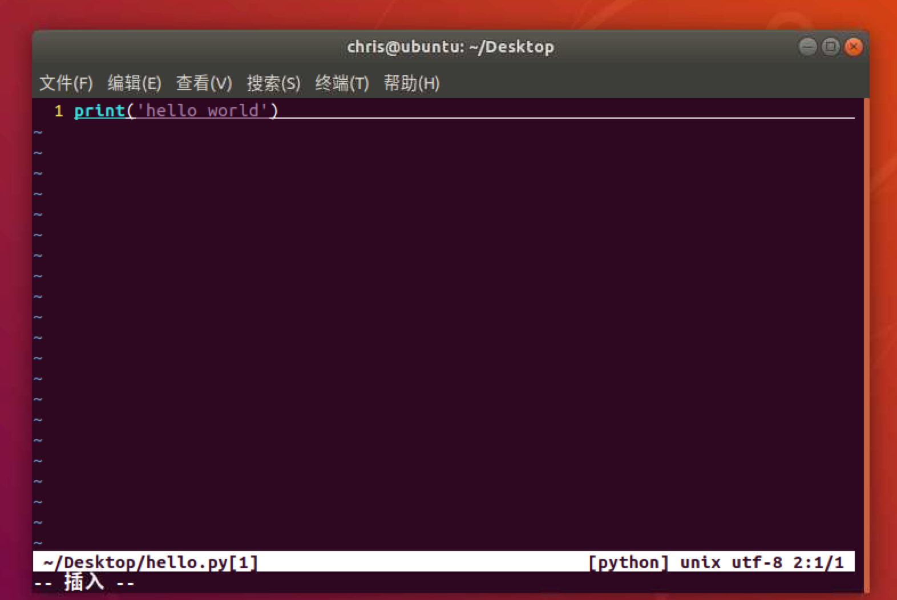
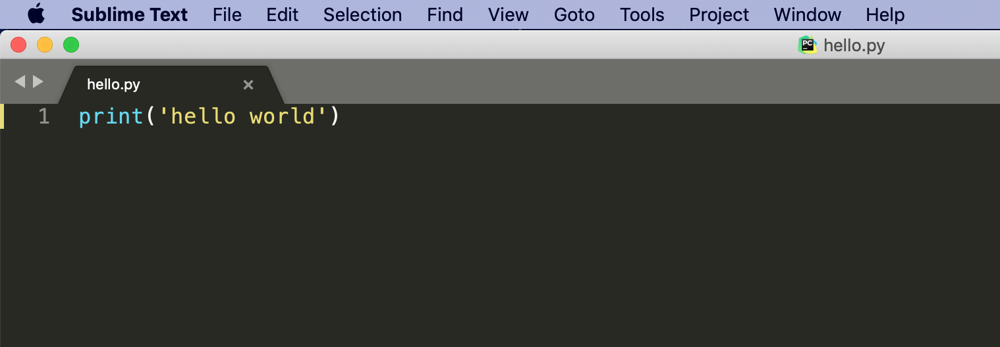
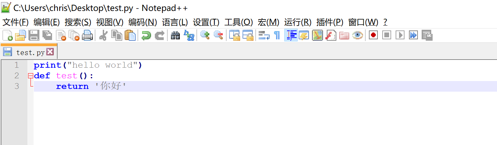

编写Python代码
根据我们之前介绍的知识，我们知道，所谓代码其实就是将一段普通文本按照一定的规范编写，然后交给电脑解析并且执行。那既然是一段文本，那我们是否可以直接使用文本编辑器来编码呢？答案是肯定的，但是这样开发起来，效率会很低。
一、常见的代码编辑工具
实际上，在我们实际工作中，如果只想查看某（几）个文件，我们还真就使用简单的代码编辑工具来完成。
常见代码编辑工具:
- vim（Linux系统下常用的代码编辑利器） 
- sublime(一款跨平台，好用的代码编辑工具) 
- notepad++(一款运行在Windows平台的代码编辑工具) 
以上介绍的几种软件开发工具，是我们工作中可能会使用到的，它们都具有代码高亮的功能，有些工具通过插件，还能实现代码自动提示等更加强大的功能。
二、运行Python程序
Python是一款解释性的语言，可以不经过编译器，直接使用解释器来执行。打开终端并输入下面指令：
python hello.py
运行hello.py文件，将会在控制台上输出hello world
三、Pycharm的下载和安装
尽管上面介绍的软件已经能够提高我们的编码速度，但是仍然无法应对我们开发中更加复杂的要求。一般情况下，我们都需要借助工具来辅助我们快速的搭建环境，编写代码以及运行程序。
- IDE的概念 IDE(Integrated Development Environment)又被称为集成开发环境。说白了，就是有一款图形化界面的软件，它集成了编辑代码，编译代码，分析代码，执行代码以及调试代码等功能。在我们Python开发中，最常用的IDE是Pycharm.
pycharm由捷克公司JetBrains开发的一款IDE,提供代码分析、图形化调试器，集成测试器、集成版本控制系统等，主要用来编写Python代码。
下载地址:http://www.jetbrains.com/pycharm/download

- 文件导航区域 能够 浏览／定位／打开** 项目文件
- 文件编辑区域 能够 编辑 当前打开的文件
- 控制台区域 能够：
- 输出程序执行内容
- 跟踪调试代码的执行